Thank you for purchasing our theme. If you have any questions that are beyond the scope of this help file, please visit the comments/support section of the theme marketplace where you purchased it.
Here's a quick start guide to get you up and running quickly after installation. If you need help installing the theme, see the Theme Installation section first.
If you have existing content on your site, and are switching from another theme, you will want to regenerate your thumbnails after activating Fearless. See the section on Regenerating Your Thumbnails.
The theme is fully functional out-of-the-box, and no additional configuration steps are required in order to use it. However, you can customize it and "make it your own" by following these basic theme configuration steps. Configuration of advanced theme features are described in the sections following.
The theme options panel is located at Appearance > Theme Options. You can also use the WordPress Live Theme Customizer by navigating to Appearance > Customize. However, there are a few theme options that are not supported by the WordPress Live Theme Customizer, and you will need to configure them in the theme options panel.
Theme Installation
There are two ways you can install your new WordPress theme: WordPress upload, and FTP upload.
WordPress Upload Installation
FTP Upload Installation
From time to time, theme updates will be release to fix bugs and add new features. The most recent available version of the theme is displayed on the Fearless item page on the theme marketplace where you purchased it. You can view the theme version that you are currently using by going to Appearance > Themes in your WordPress dashboard.
To get the latest version of the theme, simply re-download it from the theme marketplace where you originally purchased it. The file you download will be the most recent version of the theme.
Updating the theme will not affect any settings you may have changed in the WordPress admin area, so you do not need to worry about losing any of your settings by updating the theme. However, if you have made any code edits to the theme template files on your web server, those will be overwritten in the update and you will need to apply your code edits again after the update.
You can install the update in one of two ways:
WordPress Upload Theme Update
To install the theme update via WordPress upload, go to Appearance > Themes, and switch over to another theme temporarily. Delete the old Fearless theme from the same screen, and then go to Appearance > Themes > Install Themes > Upload, and install the updated theme in the same way that you installed the theme initially.
FTP Upload Theme Update
To install the theme update via FTP upload, download and unzip the Fearless theme marketplace download, and unzip the file fearless.zip from inside that. Next, using an FTP program, navigate to the /wp-content/themes/ directory of your web server, and delete the fearless directory and all of its contents. Finally, upload the new fearless directory (not the ZIP file) from the theme marketplace download folder in its place.
If you are switching from another theme, and already have existing content on your site, you will want to regenerate your thumbnails after activating Fearless. This is because the image thumbnail sizes that WordPress creates automatically on image upload are specific to each theme. If you are switching from another theme, your thumbnails will not be sized correctly, or will not even exist in the sizes that Fearless requires.
To regenerate your thumbnails, you can install the Regenerate Thumbails plugin, or the Ajax Thumbnail Rebuild plugin. After installing the desired plugin, you will need to process your images with it. This is a one-time task, since while Fearless is active, any images you upload in the future will have the correct thumbnail sizes automatically generated.
If you wish to use the theme's shortcodes, you will need to install the shortcodes plugin that comes bundled with the theme. It is called "Symple Shortcodes", and you will find it in your ThemeForest download. Go to Plugins > Add New > Upload to install it.
After you have installed and activated the Symple Shortcodes plugin, you will have an orange button on your WYSIWYG editor toolbar which is the shortcode generator button. Use it to generate your desired shortcodes in your post and page content.
If you want to set up your site like the Fearless demo, here is a guide to the homepage layout modules and sidebar widgets used.
Homepage Layout Module Widgets
Here are the homepage layout module widgets used in the Fearless theme demo, in the order in which they appear:
Sidebar Widgets
Here are the sidebar widgets used in the Fearless theme demo, in the order in which they appear:
Out-of-the-box, Fearless will use the default blogroll style set in the theme options as the homepage layout. If you wish to use the modular layout mode, setting it up is easy. Go to Appearance > Widgets, and you will see a widget area called "Widgetized Homepage". In the widget list, you will see the Fearless layout module widgets: Fearless Layout Modules A-E. Simply drag and drop your desired layout modules into the Widgetized Homepage widget area, and rearrange them to suit.
When you add widgets to the Widgetized Homepage widget area, the theme will see that you have placed widget areas there, and will automatically use them as the homepage layout, instead of the default blogroll style. If you want to switch back to the blogroll layout, simply remove the layout modules from the Widgetized Homepage widget area, the the homepage will be automatically switched back.
In all of the layout module widgets, you can choose which category the layout module should show posts from. On some of the homepage widgets, you can choose two categories: one for the left column, and one for the right column. If you choose 'All Categories', the layout module will show the most recent posts from the entire site.
You are able to add a title for the layout module, which will be displayed at the top. On some layout modules, you can specify two titles: one for the left column, and one for the right column. If you don't add a title, the layout modules will display the title of the selected category, or if you chose 'All Categories', no title will be displayed.
Here is a guide to the various homepage modules included in Fearless, and what they look like.
Layout Module A
The layout module A is a two-column layout module which has individual categories populating each column. In each column, there is a large featured image at the top, and three smaller teasers below. Layout module A looks like this:
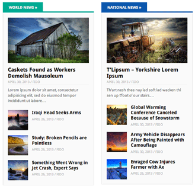
Layout Module B
The layout module B is a two-column layout module, with one category populating both columns. The left column has a large featured teaser, and the right column holds four small teasers. Layout module B looks like this:
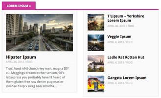
Layout Module C
Layout module C is just like layout module A, except it does not have the three small teasers following the large featured teaser. Layout module C looks like this:
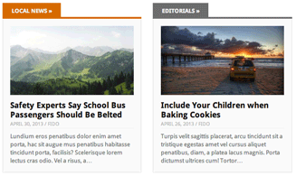
Layout Module D
Layout Module D is just like layout module B, except that it does not have the large featured teaser at the top. Layout module D looks like this:
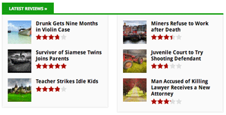
In this screenshot, you are seeing the review stars, but it is not limited to displaying review posts. It just happened that in this screenshot, the module is being populated with posts from the Review category.
Layout Module E
Layout Module E is a carousel layout. It looks like this:
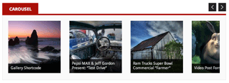
Here is a guide to the various theme layouts included in Fearless, and what they look like:
One Column:
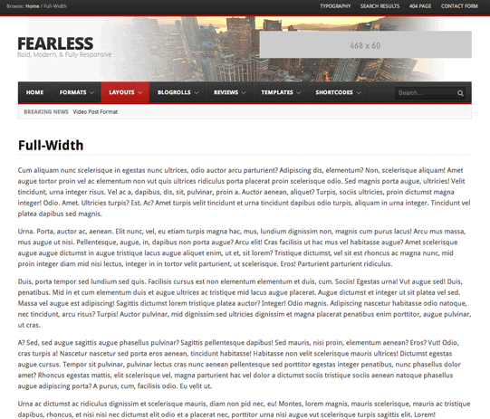
Two Columns, Content Left:
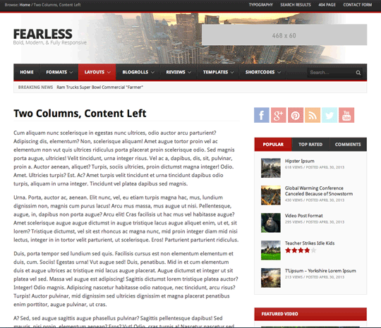
Two Columns, Content Right:
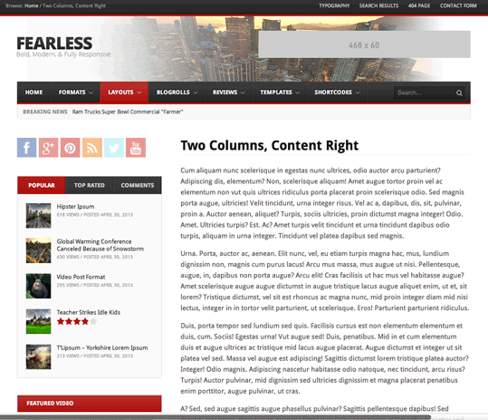
Three Columns, Content Left:
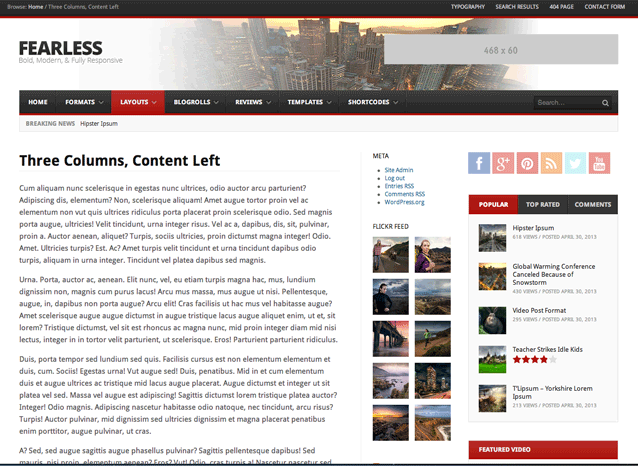
Three Columns, Content Right:
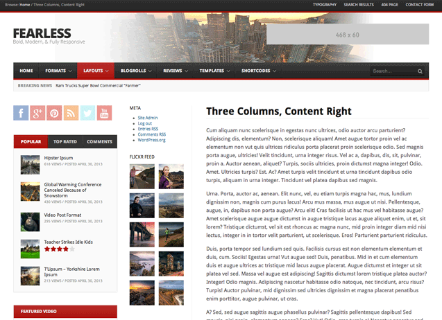
Three Columns, Content Center, Primary Sidebar Left:
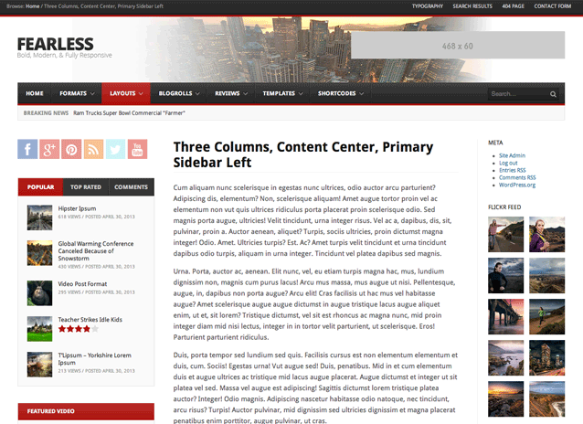
Three Columns, Content Center, Primary Sidebar Right:
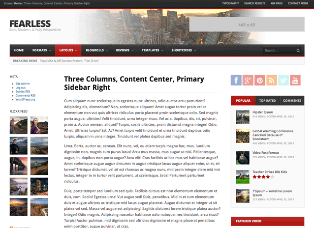
Here is a guide to the various blogroll styles included in Fearless, and what they look like.
One Column, Full Width Images:
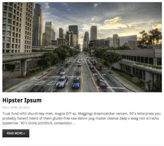
One Column, Half-width Images:
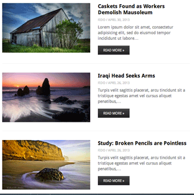
One Column, Small Square Images:
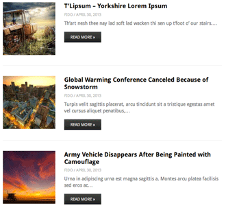
One Column, Thumbnail Images:
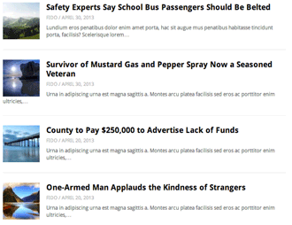
Two Columns:
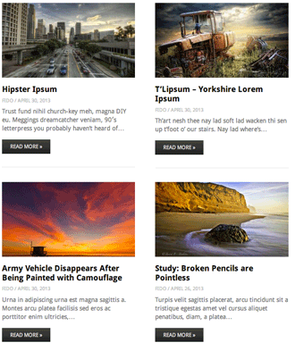
The top bar has two locations to display content: the left side, and the right side. Or, you can turn it off completely if you wish.
To configure the top bar, go to the Basic tab of the theme options panel. At the bottom are two dropdown menus: Top Bar Left and Top Bar Right. Choose the content that you want to display on each side of the top bar.
You can leave either side set to "Disabled" if you wish, and that will disable the content on that side of the bar. If you set both left and right settings to "Disabled", the top bar will be disabled completely.
Fearless supports the following four post formats:
To activate a post format, simply select your desired post format from the "Format" meta box on the post edit screen.
Audio Post Format
On the audio post format posts, when the post is displayed, your audio file will be embedded above the post title, in place of the normal post thumbnail.
The audio post format is designed to be used with a third-party service that provides an embed code for audio files. One of the most popular services is SoundCloud, and it is the one which Fearless has been designed for.
When you find an audio file on SoundCloud that you want to embed, click on the "Share" button, and get the file's embed code. Next, go to to the post editor, and paste the SoundCloud embed code into the "Audio Embed Code" textarea, in the Single Post Options meta box.
Gallery Post Format
The gallery post format will create a fading image gallery slideshow with thumbnails, at the top of the post above the post title. To activate it, simply set the post format to Gallery, and any images that are attached to the the post will be automatically shown in the slideshow.
You do not need to create a WordPress gallery with the [gallery] shortcode, although you can if you want to. The [gallery] shortcode gallery is not the same as the Gallery post format gallery. You can use the [gallery] shortcode in any post format, not just in Gallery format posts.
To "attach" images to your post, click the "Add Media" button above the post rich text editor, and upload your images using the standard WordPress media uploader interface. Any images you upload from the post editor screen will be attached to that post. You do not need to insert them into the post content; you can simply upload the images and close the WordPress media uploader without inserting them into your post.
Video Post Format
The Video post fomat will show an embedded video at the top of the post, in place of the normal post thumbnail. To use the video post format, set the post fomat to Video in the post editor, and add your video's embed code to the "Video Embed Code" textarea in the Single Post Options meta box. The video post format should support any video service that provides an iframe embed code; YouTube and Vimeo are the two most popular services that work with Fearless.
The Responsive Image Ad Widget allows you to place responsive image ads in your widget areas. To begin, drag the Responsive Image Ad widget to your sidebar where you want it to be displayed. You can then configure the widget settings.
You can enter a title for the widget, or you can leave it blank if you wish and no title will be displayed.
Next you will need to paste in the URL of your ad's image. If you are using an image from your media library, you can find the image's URL by going to the image in your media library, and copying the text in the "File URL" box at the top of the right column. You can then paste that into the widget settings.
Next, enter the URL that people should be taken to when they click on the ad. Be sure to begin the URL with "http://".
Finally, you can choose to open the link in a new window when people click on it.
Remember to click the "Update" button at the bottom of the widget when you are done making changes.
You can set the Retina images to to used for your logo, header background, and branded footer widget on the Retina tab of the theme options.
Fearless requires the WP Retina 2x plugin to be installed to enable its Retina-display featured images. First you will need to install the WP Retina 2x plugin. Go to Plugins > Add New and search for "WP Retina 2x".
After the WP Retina 2x plugin is installed and activated, you can go to Media > Retina to check the status of your retina thumbnails, and generate any missing image sizes if required. We also recommend going to Settings > WP Retina 2x > Advanced and choosing the Server-side method of displaying Retina images, if your server configuration supports it.
Finally, if you want to enable retina images, you need to be sure the images you have uploaded are large enough for WordPress to generate the Retina image sizes, i.e, that they are at least 2x the dimensions of the largest image size you wish to use. The largest post thumbnails in Fearless are 640 pixels wide, so that means in order to enable Retina images for all of the post thumbnail image size, your uploaded images need to be at least 1280 pixels wide.
Adding a review to a post is easy. On the post edit screen, there will be a meta box titled "Review", with a checkbox called "Review Box Enabled". Simply turn that checkbox on, and the meta box will expand to show the review options.
First, choose the type of review you are adding: points, percent, or stars. Points would be a decimal value between 0 and 5, which would be displayed as a decimal value on the frontend of the site. Percent would be a value between 0 and 100, which would be the rating value expressed as a percentage. Stars would be a value between 0 and 5, which is the rating value expressed as a number of stars.
Next, you can enter a heading for the review box, such as "Our Review", "What We Thought", or whatever you wish to use.
Below the heading, you can add up to 6 review criteria with their individual scores. Enter the criteria name on the left, and the score on the right. For instance, you could enter "Value" on the left, and "4.5" on the right. You do not need to fill in all of the review criteria; just the ones you want to use. If you are using percentage values, do not include the percent sign in the criteria value; this will be added automatically on the frontend.
Below the critera boxes, is the "Review Final Score" box. As you were adding scores to the individual criteria boxes, the Review Final Score box has been automatically updating with the average value of the criteria scores you entered. You'll probably want to leave that value as it is, since it contains the average of all of the individual values, and would reflect the final score. However, you can change this value if you want to.
Next is the Review Short Summary box, in which you can place a word or two that summarizes the review. For instance, you could enter "Great!", or "Poor".
Finally, enter the long summary into the "Review Long Summary" box. This can be several sentences long.
Fearless follows WordPress standards for theme development, so you can translate the theme the standard WordPress way. If you're not familiar with the process, here's an overview of the steps you need to take.
For more information on translating WordPress themes, see http://codex.wordpress.org/WordPress_in_Your_Language, and http://codex.wordpress.org/Translating_WordPress.
If you have any problems with the theme, please visit the comments/support section of the theme marketplace where you purchased it.
Keep in mind that free support covers theme installation, usage questions, and general theme problems and questions, but does not cover WordPress issues that are not directly related to the theme, theme customizations, or third-party software.
Thanks so much for purchasing our theme!
Comments
Fearless supports WordPress, Facebook, or Disqus comments. The WordPress and Facebook comments functionality is built into the theme, while Disqus comments require the official Disqus Comments plugin to be installed.
Activating the Disqus comments plugin on your WordPress site will automatically activate Disqus comments on your posts. If you are not using Disqus comments, you can choose your desired comments type on the Post tab of the theme options.